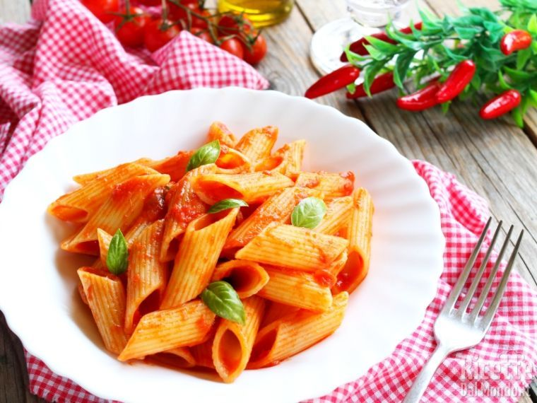

Penne al pomodoro
Ingredienti
Di seguito riportiamo gli ingredienti per preparare il nostro piatto
Preparazione
- Scaldate in padella l'olio d'oliva
- Fate sobbollire il sugo a fuoco lento
- Cuocete la pasta al dente in una pentola
- Aggiungete il basilico al sugo e usate la salsa per condire la pasta insieme al parmigiano grattugiato, gustandola ben calda
- Servire il piatto